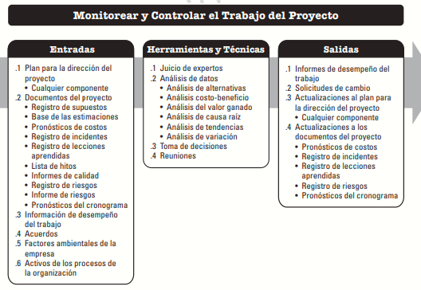

En la fase de ejecución es indispensable cumplir con la planeación realizada anteriormente con el fin de ejecutar y construir el desarrollo del proyecto. A continuación se ilustra el diagrama de datos para la fase de ejecución

En la fase de ejecución se definen los siguientes procesos:
• Monitorear y controlar el trabajo del proyecto
Se debe hacer seguimiento, revisar e informar el avance general de la construcción del proyecto con el fin de cumplir con los objetivos de desempeño definidos en el plan de dirección del proyecto. Por medio de este proceso se logra visualizar el estado actual del proyecto, y así mismo poder identificar las medidas correspondientes para poder solucionar los problemas de desempeño y tener una visión del estado futuro del proyecto teniendo en cuenta el cronograma, costos y presupuestos.
• Realizar el control integrado de cambios
Por medio de este proceso se revisan todas las solicitudes de cambio, aprobar y gestionar los cambios a entregables, documentos del proyecto y al plan para la dirección del proyecto y comunicar las decisiones. Los cambios que surjan para el desarrollo del requerimiento afectan los tiempos estimados inicialmente.
• Validar el alcance
Es el proceso en donde se formaliza la aceptación de los entregables del proyecto que se hayan completado.
• Controlar el alcance
Es importante monitorear el estado del alcance del proyecto y del producto, y se gestionan cambios a la línea base del alcance. La línea base del alcance es mantenida a lo largo del proyecto.
• Controlar el cronograma
Se monitorea periódicamente el estado del proyecto para actualizar el cronograma del proyecto y gestionar los cambios que surjan a la línea base del cronograma.
• Controlar los costos
Es el proceso de monitorear el estado del proyecto y así mismo poder actualizar los costos del proyecto y gestionar cambios a la línea base de costos.
• Controlar la calidad
En este proceso de monitorear y registrar los resultados de la ejecución de las actividades de gestión de calidad y así mismo poder evaluar el desempeño y asegurar que las salidas del proyecto sean completas, correctas y satisfagan las expectativas del cliente.
• Controlar los recursos
Se debe asegurar que los recursos físicos asignados al proyecto cuenten con la disponibilidad que se planificó, así mismo, se debe monitorear la utilización de recursos planificada frente a la real y tomar acciones correspondientes.
• Monitorear las comunicaciones
Se debe controlar y asegurar que las necesidades de información del proyecto y de los involucrados se satisfagan lo mejor posible.
• Monitorear los riesgos
Por medio de este proceso se monitorea la ejecución de los planes acordados y aprobados de respuesta a los riesgos presentados, se debe hacer un seguimiento a los riesgos identificados, analizar nuevos riesgos y evaluar la efectividad del proceso de gestión de los riesgos a lo largo del proyecto.
• Controlar las adquisiciones
Se debe hacer seguimiento de la ejecución de los contratos, efectuar cambios y correcciones como se requiera y cerrar contratos.
• Monitorear el involucramiento de los interesados
Se deben adaptar las estrategias necesarias para involucrar a los interesados del proyecto por medio de la modificación de planes o algún cambio que suceda durante la construcción del requerimiento.